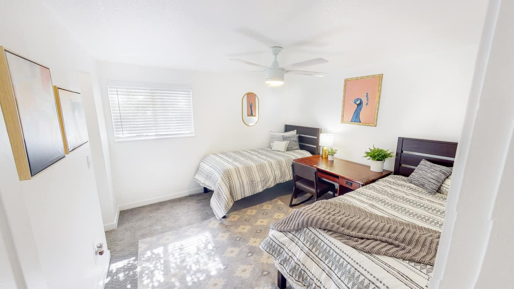
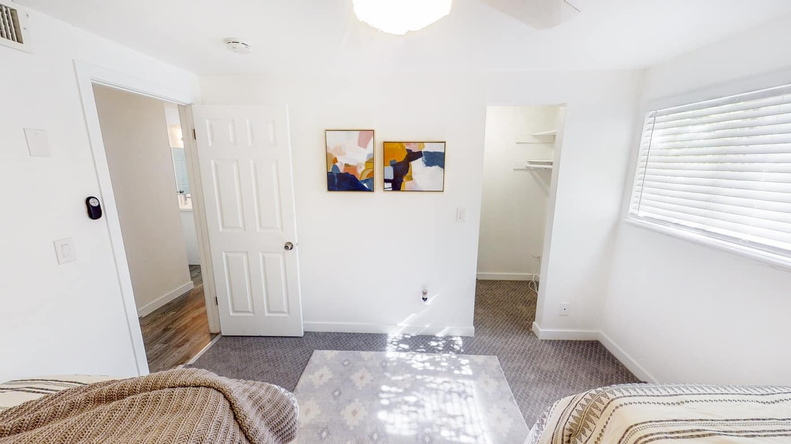

In case you like Geography
Utah County, located in the northern part of central Utah, is characterized by a diverse and striking geography.
The county is framed by the towering Wasatch Range to the east, a segment of the Rocky Mountains known for its
jagged peaks and year-round recreational opportunities. Mount Timpanogos, one of the most prominent peaks in the
region, rises to an elevation of 11,752 feet, providing breathtaking views and a backdrop for many local
communities. The range is dotted with lush forests, cascading waterfalls, and scenic hiking trails, making it a
natural haven for outdoor enthusiasts.
To the west lies Utah Lake, the largest freshwater lake in the state, spanning approximately 96,600 acres. The
lake is shallow, with a maximum depth of around 14 feet, and serves as a vital ecological and recreational
resource. Its surrounding wetlands support a rich variety of wildlife, including migratory birds, while its
waters are popular for fishing, boating, and paddleboarding. Utah Lake's scenic beauty and proximity to urban
centers make it a cherished feature of the county.The central part of Utah County is a sprawling valley, known as Utah Valley, which hosts most of the county's
population. The valley is fertile and historically significant, as it was settled by early pioneers who relied
on its agricultural potential. Today, the area is a bustling hub of urban development, encompassing cities such
as Provo, Orem, and Lehi. These cities blend seamlessly into the natural surroundings, offering residents
stunning views of the surrounding mountains and lake.
This link goes to another page
- BYU
- UVU
- USU
- UofU
The county's southern region features a more rugged and varied landscape, with rolling hills and canyons.
Spanish Fork Canyon, a prominent feature in the south, serves as a gateway to the Uinta Basin and boasts
picturesque vistas, steep cliffs, and a range of outdoor activities. The canyon is also a vital transportation
route, connecting Utah County to eastern Utah and beyond.


Utah County's geography is enriched by numerous rivers and streams that flow through its landscapes, including
the Provo River. This river originates in the Uinta Mountains and winds its way through the county, offering
excellent fly-fishing opportunities and contributing to the area's natural beauty. The river also supports local
agriculture and provides water for urban use, underscoring its importance to the region.
Awe


This is a paragraph learning about padding and stuff
This is a paragraph learning about padding and stuff
This is a paragraph learning about padding and stuff
jump to top